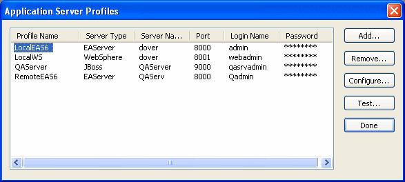

PowerBuilder provides tools for developing custom class (nonvisual) user objects and deploying them as EAServer components. You can deploy these components to an EAServer host running on the Windows, Sun Solaris, Hewlett-Packard HP-UX, and IBM AIX operating systems. See "Deploying a component to EAServer".
 Limitations on UNIX If you plan to deploy components to a UNIX server, you should
be aware that the PowerBuilder runtime libraries on UNIX platforms
do not support graphical operations or calls to the Windows application
programming interface.
Limitations on UNIX If you plan to deploy components to a UNIX server, you should
be aware that the PowerBuilder runtime libraries on UNIX platforms
do not support graphical operations or calls to the Windows application
programming interface.
PowerBuilder provides several wizards to facilitate the development and deployment of EAServer components:
To build and deploy an EAServer component from a custom class user object, complete the following steps:
To test or deploy an EAServer component that you developed in PowerBuilder, create a project object and build the project. You can create a project object from the Target, Object, or Project wizard.
To deploy a component, open the project in the Project painter, optionally modify the project settings, and build the project. When you do this, the EAServer component generator deploys the component interface and the PowerBuilder implementation of that interface to the target server.
For testing purposes, you can use live editing to build the project automatically from the User Object painter. This removes the need to build the project from the Project painter. When live editing is enabled in the User Object painter, PowerBuilder builds the project for an EAServer component each time you save the user object. For more information on live editing, see "Testing and debugging the component".
When you create a new user object by using the EAServer Target or Object wizard, you can optionally create a To-Do List. If you check the Generate To-Do List box on the last page of the wizard, the wizard adds tasks to the To-Do List to remind you to complete all phases of development.
An application server profile is a named set of parameters stored in your system registry that defines a connection to a particular EAServer or third-party application server host. Before you use a wizard to create a component, you should create a profile for the server where the component will be deployed.
The Application Server Profiles dialog box lists your defined profiles. You create, edit, delete, and test EAServer profiles from this dialog box.

The Profile Name in the Edit Application Server Profile dialog box cannot be edited. This is because the name is stored in the project object along with the other properties of the profile. If the profile name cannot be found in the registry when the project is deployed, the description in the project object is used.
 To create an application server profile:
To create an application server profile:
Click the Application Server Profile button in the PowerBar.
The Application Server Profiles dialog box displays, listing your configured profiles.
Select Add.
The Edit Application Server Profile dialog box displays.
Type the profile name, server name, port number, login name, and password (if required).
(Optional) Select Test to verify the connection.
Click OK to save your changes and close the dialog box.
The Application Server Profiles dialog box displays, with the new profile name listed. The Application Server profile values are saved in the registry in HKEY_CURRENT_USER/Software/Sybase/PowerBuilder/105/ JaguarServerProfiles.